3D Gaussian Splatting is effective in multi-view surface reconstruction tasks, fundamental to photogrammetry applications. Mainstream pipelines focus on optimizing for explicit Gaussians to enhance volumetric rendering quality, typically relying on rendering-based Truncated Signed Distance Function (TSDF) methods for reconstruction, while the training and meshing often suffer from missing details and geometric distortions under occlusions or restricted viewpoints. In this paper, we focus on a new problem definition: directly formulating implicit surface representation exploiting geometric features of trained Gaussian Surfels. For this problem, we introduce Gaussian Surfels with Spatial Awareness (GSSA) for reconstruction, a spatially aware reconstruction framework that optimizes for Surfel distributions from geometric primitives via a 3D refiner, and constructs SDF by integrating signed distances from voxel vertices to nearby Surfels. Compared with state-of-the-art GS-based, especially Surfel-based, reconstruction methods, GSSA achieves both competitive geometric accuracy and efficiency. On terrestrial (indoor object) and airborne (photogrammetry) reconstruction benchmarks, GSSA maintains a competitive balance between reconstruction time and accuracy. Further migration experiments demonstrate that GSSA can also be integrated as a plug-and-play module into general Surfel-based pipelines.
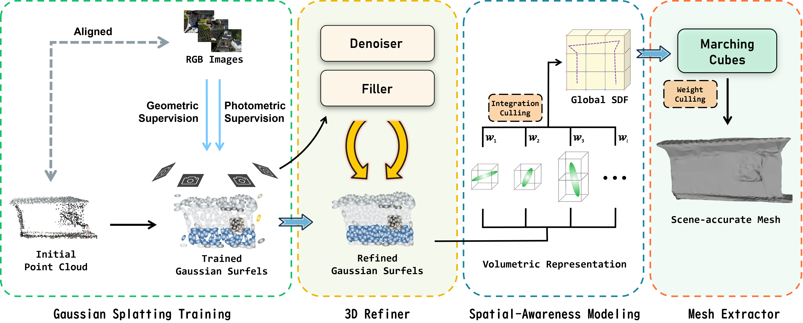
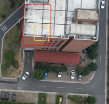
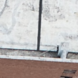
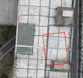
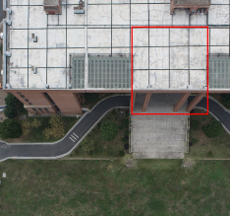
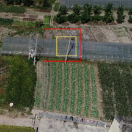
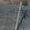
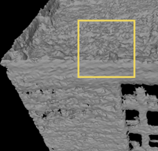
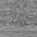
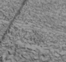
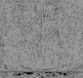
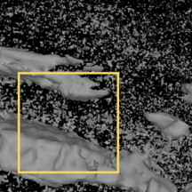
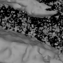
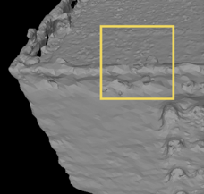
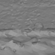
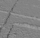
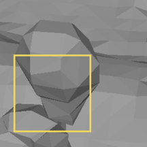
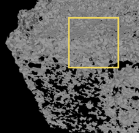
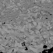
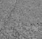
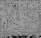
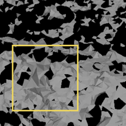
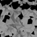
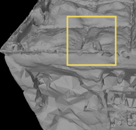
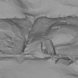
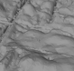
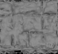
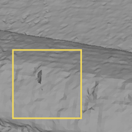
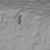
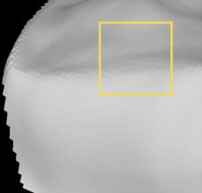
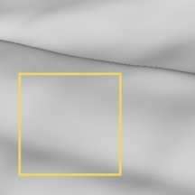
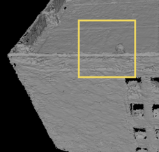
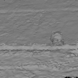
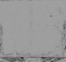
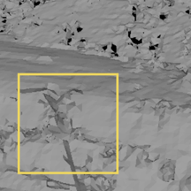
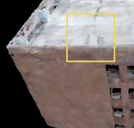
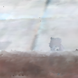
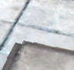
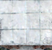
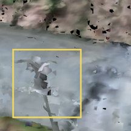
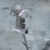
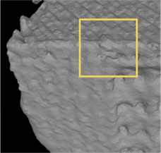
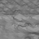
| Method | Precision (%) ↑ | Recall (%) ↑ | F1 Score (%) ↑ | Chamfer ↓ | Mean Normal (°) ↓ | Hausdorff ↓ |
|---|---|---|---|---|---|---|
| TSDF | 91.6 | 92.8 | 92.2 | 0.0189 | 48.1 | 0.3274 |
| Poisson | 80.4 | 91.8 | 85.7 | 0.0198 | 39.6 | 0.3269 |
| α-Shape | 87.1 | 83.9 | 85.5 | 0.0180 | 48.5 | 0.3251 |
| GOF | 81.0 | 89.8 | 85.1 | 0.0199 | 48.8 | 0.3272 |
| NeuS | 81.7 | 77.6 | 79.6 | 0.0202 | 43.0 | 0.3149 |
| Ours | 93.4 | 92.8 | 93.1 | 0.0179 | 34.8 | 0.3105 |
| Method | Precision (%) ↑ | Recall (%) ↑ | F1 Score (%) ↑ | Chamfer ↓ | Mean Normal (°) ↓ | Hausdorff ↓ |
|---|---|---|---|---|---|---|
| TSDF | 34.4 | 75.6 | 47.3 | 0.0057 | 53.4 | 0.4983 |
| Poisson | 49.9 | 82.4 | 62.2 | 0.0051 | 49.4 | 0.7649 |
| α-Shape | 93.6 | 68.1 | 78.8 | 0.0011 | 50.8 | 0.2435 |
| GOF | 95.1 | 68.6 | 79.7 | 0.0008 | 43.2 | 0.1694 |
| NeuS | 71.9 | 70.1 | 71.0 | 0.0018 | 46.0 | 0.2104 |
| Ours | 88.6 | 77.2 | 82.5 | 0.0010 | 47.3 | 0.1683 |
This project benefits from 2DGS, CityGaussianV2. Thanks for their great work!
This project is licensed under CC BY-NC-SA 4.0. Commercial use requires prior consent. See LICENSE details.
@article{tang2026gssa,
title = {GSSA: Gaussian Surfels with Spatial Awareness for Surface Reconstruction},
author = {Tang, Haojun and Zou, Siyuan and Pan, Hongbo and Lu, Yixin and Zhou, Shun},
journal = {Remote Sensing},
year = {2026},
volume = {18},
number = {15},
article-number = {2497},
doi = {10.3390/rs18152497},
url = {https://www.mdpi.com/2072-4292/18/15/2497},
issn = {2072-4292}
}